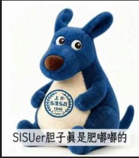
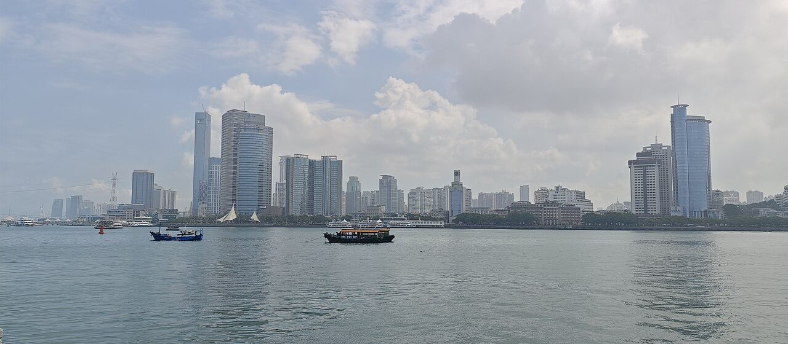
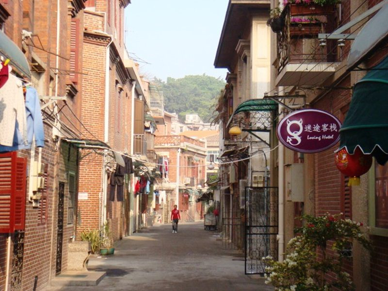
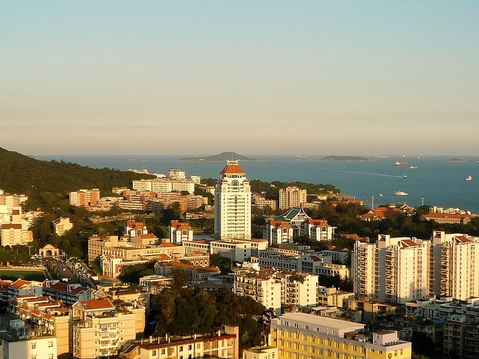
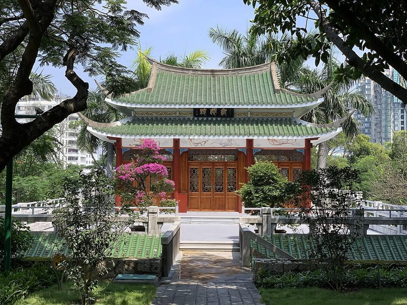
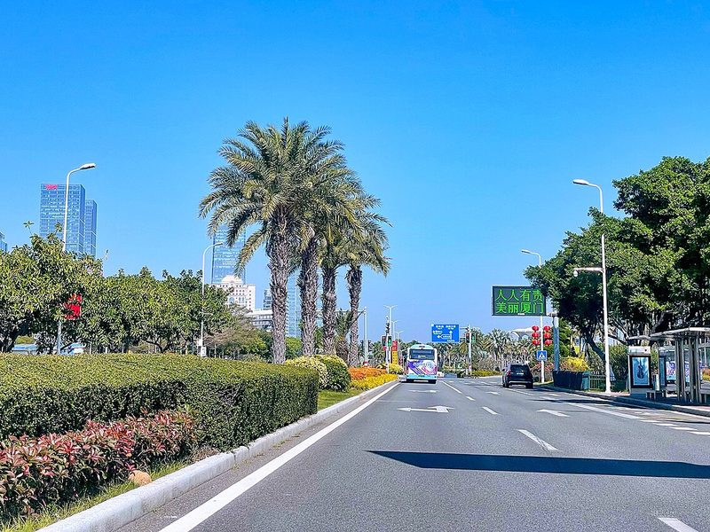
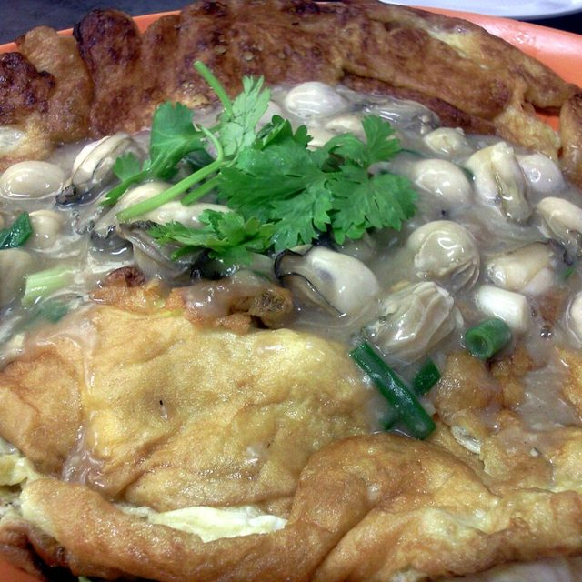

My hobby is playing basketball and chess. I am learning web designing.

点击可V你50I like playing basketball because I think it can make me stronger.
I like playing chess because I think it will sharpen my mind.
MY HOMETOWN
Amoy · 别称鹭岛 · 海上花园 —— 一座把海风、古早味和闽南烟火装进日常的城市。

我的家乡厦门，简称“鹭”，相传远古时是白鹭栖息之地，所以又叫鹭岛。它位于福建省东南沿海、台湾海峡西岸，与金门隔海相望，由厦门本岛、鼓浪屿等岛屿和沿海大陆组成，人们喜欢叫它“海上花园”。
这里属南亚热带海洋性季风气候，冬无严寒、夏无酷暑，凤凰木与三角梅开满街头；这里是 1980 年设立的经济特区，也是国家级闽南文化生态保护区——一座既有古早味、又有现代感的滨海城市。
厦门一带最早纳入县级建制，此后渐渐形成渔耕聚落。
明洪武年间设中左所、筑厦门城，“厦门”之名自此载入史册，寓意“国家大厦之门”。
以厦门为基地练兵屯师，今天的思明区正由此得名。
《南京条约》后厦门开埠，华洋云集，侨乡文化由此兴盛。
设立厦门市，成为福建最早的建制市之一。
厦门成为中国改革开放的前沿窗口，此后升格计划单列市、副省级市。
“鼓浪屿：历史国际社区”申遗成功，成为厦门最闪亮的世界级名片。

查看详细介绍 ↗1.88 平方公里的小岛禁行机动车，九百多栋万国老建筑藏在红砖巷子里，钢琴声与海浪声此起彼伏，被称为“海上花园”与“钢琴之岛”。
glysyw.com · 鼓浪屿世界文化遗产网 ↗
查看详细介绍 ↗1921 年由陈嘉庚创办，嘉庚建筑“穿西装、戴斗笠”——红砖燕尾脊配西式廊柱，常被称作中国最美校园。
xmu.edu.cn · 厦门大学官网 ↗
查看详细介绍 ↗始建于唐代的千年古刹，背靠五老峰、与厦大一墙之隔，登峰可俯瞰校园与大海，素饼远近闻名。
nanputuo.com · 南普陀寺官网 ↗
查看详细介绍 ↗40 多公里的滨海长廊，椰林、沙滩、碧海一路相伴，是骑行、看日出和听海风最好的地方。
wlj.xm.gov.cn · 厦门市文化和旅游局 ↗沙茶酱与高汤熬出的汤头浓郁微辣、回甘带花生香，加海蛎、大虾、醋肉是本地人的标配。

地瓜粉浆裹住新鲜小海蛎，煎到两面酥黄、外焦里嫩，蘸一点甜辣酱才算完整。
厦门是闽南文化的核心城市：南音被称作“中国音乐活化石”，与海洋民俗“送王船”同列人类非物质文化遗产代表作名录；歌仔戏、高甲戏、答嘴鼓至今活跃在街头巷尾。
每逢中秋，家家户户围坐掷骰“”——相传由郑成功所创的习俗，让厦门人过着“小春节、大中秋”的独特节日。
点一下「博饼」，就能自己掷一把六粒骰子。
数据截至 2025 年末，来源：厦门市国民经济和社会发展统计公报 · 厦门市人民政府门户网站
本栏目照片来自 Wikimedia Commons（CC BY-SA 等开放授权），摄影：JULIANISME / Shoestring / Ratvirgin / Slyronit / Windmemories / Chensiyuan
MID-AUTUMN FESTIVAL
六粒骰子落进瓷碗，博个中秋彩头 · 一秀到状元，一副会饼共 63 块